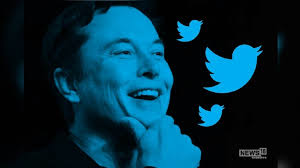

ELON MUSK

"It is possible for ordinary people to choose to be extraordinary."
Elon Musk is the founder and CEO of SpaceX, Tesla and Neuralink.
Moreover, those are only small pieces of his grand-scale puzzle
that leads to a better future and the colonization of Mars.
Here is a timeline of Elon Musk's life events:
- Elon was born in 1971 in South Africa
- He used to read 10 hours per day
- Musk learned BASIC in 3 days
- In 1983 he created a video game and sold it for 500$
- At the age of 14, Elon decided that his life mission is to save humanity
- In 19891989, he started college in Ontario
- In 1994 1994, he got Wharton economics and physics degrees
- After that he worked two intern jobs and brainstormed ideas
- He left Stanford PhD after 2 days
- In 1995 1995, Musk starts Zip2 with his brother, coding it himself
- After sleeping in the office for 3 months, he raised his first investment money (3M), and later sold his share for $22 Million
- In 1999, he starts X.com - an online bank with his own money
- In 2000, he merges with his rival start-up Confinity to form PayPal
- Later that same year, he got ousted from PayPal as a CEO (while on honeymoon). Regardless of that, Musk continues to invest money in it
- In 2001 , Elon moved to LA to be closer to the space industry and learned how to build rockets from books
- In 2002 , after finding out that rockets are overpriced, the ambitious entrepreneur started Space X and got 250M from sale of PayPal
- In 2004 , he founded likeminded people and started his venture into electric cars - TESLA
- In 2006, his first rocket was launched and exploded. Moreover, he won a NASA contracts to demo delivery and became the first investor of Solar City - his cousin's company
- In 2007, his second rocket was launched... and exploded again
- In 2008, the first TESLA customers got their Roadsters at $109,000. What is more, another failed attempt at launching a rocket brought both TESLA and Space X to the crisis of running out of money. However, his fourth launch turned successful which won him a NASA contract for 12 flights for $1,6 Billion. In december 2008, hours before going bankrupt, Elon found funding for TESLA.
- In 2009 , Musk unveiled the Model S car
- In 2010, TESLA went public at 17$ per share, ending at $24 by the end of the day
- In 2011, Elon announced the project for reusable rockets, which would make flights 100 times cheaper. This was also the year in which Musk promised to send humans to Mars by 2031
- In 2012, the shipping for Model S begins while the Model X is unveiled and a supercharger network for the cars was launched
- In 2014, he started building the Gigafacory to mass produce batteries
- In 2015, Musk unveiled Powerwall, first customers got their Model X. However, there was also a failed launch of a rocket (after 19 successful launches) but also a successul landing of the first reusable rocket to reach orbit.
- In 2017, he started the Boring Company to dig tunnels, two new cars were uvailed - TESlA Roadster and and the Semi Electric Truc and first customers got their Model 3.
- In 2018, Elon Musk launched his largest rocket - The Falcon Heavy
He is one of the people that constantly shape the 21st century
© copyright of this content is from Wikipedia page
"If something is important enough, you do it even if the odds are not in your favor."